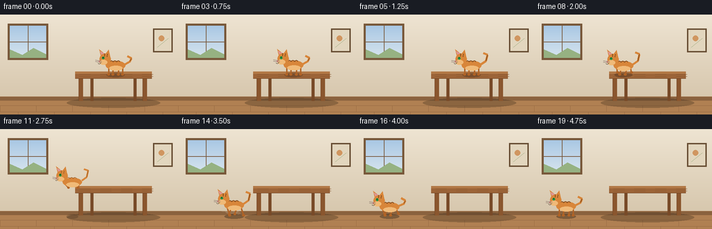
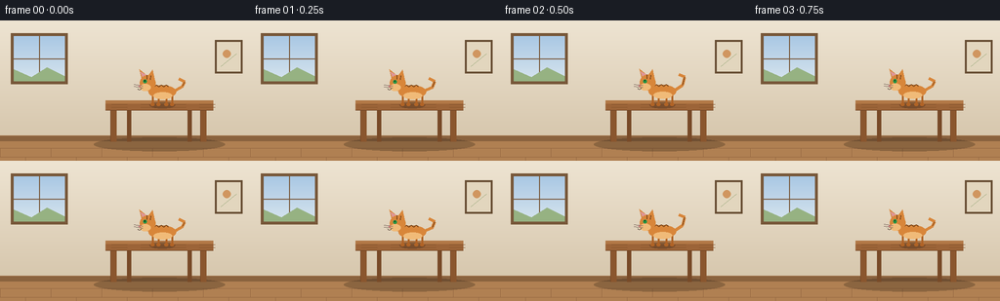

CODING AGENTS AS PIXEL WORLD MODELS
traex/Seed-2.1-Pro-0915 · dynamic_spatial_relationship_0011
点击播放 · 原生 RGB 像素
逐轮保存的候选
回放视频、检查图与代码变化。
每份候选均可单独播放。实际图片检查记录在下方工具轨迹中。
候选 01播放与检查图
点击播放 · 原生 RGB 像素


展开代码变化
--- 上一保存版本
+++ 本次保存版本
@@ -0,0 +1,280 @@
+"""Procedural RGB video: a cat sits on a table, then runs to the left of it.
+
+20 frames, 256x144, 4 fps. Rendered at 2x supersampling and downscaled.
+No external assets, models, or network access.
+"""
+import math
+import numpy as np
+from PIL import Image, ImageDraw
+
+import artifact_io
+
+W, H, N, FPS = 256, 144, 20, 4.0
+SS = 2 # supersampling factor
+
+# Scene layout (target-resolution coordinates)
+FLOOR_Y = 124
+TABLE = (108, 82, 218, 92) # tabletop rectangle (l, t, r, b)
+LEG_X_F = (116, 208)
+LEG_X_B = (132, 194)
+
+ORANGE = (216, 134, 58)
+ORANGE_D = (176, 99, 38)
+CREAM = (240, 186, 120)
+STRIPE = (122, 70, 28)
+INK = (60, 42, 30)
+
+
+def lerp(a, b, u):
+ return a + (b - a) * u
+
+
+def smoothstep(u):
+ return u * u * (3 - 2 * u)
+
+
+def shadow(img, cx, gy, rx, ry, alpha=90):
+ layer = Image.new("RGBA", img.size, (0, 0, 0, 0))
+ ld = ImageDraw.Draw(layer)
+ ld.ellipse([(cx - rx) * SS, (gy - ry) * SS,
+ (cx + rx) * SS, (gy + ry) * SS], fill=(40, 28, 18, alpha))
+ img.alpha_composite(layer)
+
+
+# --------------------------------------------------------------- background
+
+def draw_background(d):
+ top = np.array([238, 228, 210], dtype=float)
+ bot = np.array([214, 198, 172], dtype=float)
+ for y in range(0, FLOOR_Y * SS):
+ u = y / (FLOOR_Y * SS)
+ c = tuple((top + (bot - top) * u).astype(int))
+ d.line([(0, y), (W * SS, y)], fill=c)
+
+ # Window
+ wl, wt, wr, wb = 14 * SS, 16 * SS, 66 * SS, 62 * SS
+ d.rectangle([wl - 3 * SS, wt - 3 * SS, wr + 3 * SS, wb + 3 * SS],
+ fill=(120, 88, 58))
+ for y in range(wt, wb):
+ u = (y - wt) / max(1, wb - wt)
+ c = (int(lerp(170, 214, u)), int(lerp(200, 228, u)), int(lerp(228, 238, u)))
+ d.line([(wl, y), (wr, y)], fill=c)
+ d.line([(wl, (wt + wb) // 2), (wr, (wt + wb) // 2)], fill=(120, 88, 58), width=SS)
+ d.line([((wl + wr) // 2, wt), ((wl + wr) // 2, wb)], fill=(120, 88, 58), width=SS)
+ d.polygon([(wl, wb), (wl, wb - 12 * SS), (wl + 18 * SS, wb - 4 * SS),
+ (wl + 34 * SS, wb - 14 * SS), (wr, wb - 5 * SS), (wr, wb)],
+ fill=(150, 178, 130))
+
+ # Framed picture
+ px0, py0, px1, py1 = 222 * SS, 22 * SS, 246 * SS, 52 * SS
+ d.rectangle([px0 - 2 * SS, py0 - 2 * SS, px1 + 2 * SS, py1 + 2 * SS],
+ fill=(104, 78, 52))
+ d.rectangle([px0, py0, px1, py1], fill=(226, 214, 190))
+ d.ellipse([px0 + 6 * SS, py0 + 8 * SS, px0 + 14 * SS, py0 + 16 * SS],
+ fill=(208, 150, 96))
+ d.line([(px0 + 4 * SS, py1 - 5 * SS), (px1 - 4 * SS, py0 + 12 * SS)],
+ fill=(150, 168, 120), width=max(1, SS // 2))
+
+ # Baseboard and wooden floor
+ d.rectangle([0, (FLOOR_Y - 6) * SS, W * SS, FLOOR_Y * SS], fill=(138, 98, 62))
+ d.line([(0, (FLOOR_Y - 6) * SS), (W * SS, (FLOOR_Y - 6) * SS)],
+ fill=(168, 122, 80), width=max(1, SS // 2))
+ d.rectangle([0, FLOOR_Y * SS, W * SS, H * SS], fill=(176, 128, 82))
+ for i, y in enumerate(range(FLOOR_Y + 7, H, 9)):
+ d.line([(0, y * SS), (W * SS, y * SS)], fill=(150, 104, 66),
+ width=max(1, SS // 3))
+ offset = 0 if i % 2 == 0 else 26
+ for x in range(offset, W, 52):
+ d.line([(x * SS, y * SS), (x * SS, (y + 9) * SS)],
+ fill=(150, 104, 66), width=max(1, SS // 3))
+
+
+def draw_table(d):
+ l, t, r, b = TABLE
+ for x in LEG_X_B:
+ d.rectangle([(x - 2) * SS, b * SS, (x + 2) * SS, FLOOR_Y * SS],
+ fill=(120, 74, 40))
+ for x in LEG_X_F:
+ d.rectangle([(x - 3) * SS, (b - 2) * SS, (x + 3) * SS, FLOOR_Y * SS],
+ fill=(138, 86, 46))
+ d.line([(x - 3) * SS, (b - 2) * SS, (x - 3) * SS, FLOOR_Y * SS],
+ fill=(112, 68, 36), width=max(1, SS // 2))
+ d.rectangle([l * SS, t * SS, r * SS, b * SS], fill=(156, 100, 56))
+ d.rectangle([l * SS, t * SS, r * SS, (t + 3) * SS], fill=(178, 120, 70))
+ d.line([(l * SS, b * SS), (r * SS, b * SS)], fill=(104, 64, 34),
+ width=max(1, SS // 2))
+ for gy in (t + 4, t + 7):
+ for gx0 in range(l + 6, r - 6, 30):
+ d.line([(gx0 * SS, gy * SS), ((gx0 + 16) * SS, gy * SS)],
+ fill=(134, 84, 46), width=max(1, SS // 3))
+
+
+# -------------------------------------------------------------------- cat
+
+def draw_cat(img, cx, gy, scale, run_phase, moving, airborne, t):
+ """Cat facing left; (cx, gy) is the contact point under its body."""
+ d = ImageDraw.Draw(img)
+ s = scale * SS
+ bob = (math.sin(run_phase * 2) * 1.2 * s) if moving else math.sin(t * 1.7) * 0.4 * s
+ bc_y = gy * SS - 13 * s + bob
+ head_cy = gy * SS - 22 * s + bob
+ hx = cx * SS - 15 * s
+
+ # Legs
+ for i, (ox, ph) in enumerate(zip((-10, -4, 4, 10), (0, math.pi, math.pi, 0))):
+ ax = cx * SS + ox * s
+ ay = bc_y + 4 * s
+ if airborne:
+ foot_x = ax + (4 * s if i % 2 == 0 else -2 * s)
+ foot_y = ay + 4 * s
+ elif moving:
+ swing = math.sin(run_phase + ph) * 4.2 * s
+ lift = max(0, math.cos(run_phase + ph)) * 3 * s
+ foot_x = ax + swing
+ foot_y = gy * SS - lift
+ else:
+ foot_x, foot_y = ax, gy * SS
+ d.line([(ax, ay), (foot_x, foot_y)], fill=ORANGE_D, width=max(1, int(2.4 * s)))
+ d.ellipse([foot_x - 1.6 * s, foot_y - 1.2 * s,
+ foot_x + 2.4 * s, foot_y + 1.6 * s], fill=ORANGE_D)
+
+ # Tail
+ tx = cx * SS + 14 * s
+ ty = bc_y - 2 * s
+ sway = math.sin(t * 2.1) * (2.5 * s if not moving else 4.5 * s)
+ curl = -11 * s if airborne else -8 * s - abs(math.sin(t * 2.1)) * 3 * s
+ tail_pts = [
+ (tx, ty),
+ (tx + 7 * s, ty - 4 * s + sway * 0.3),
+ (tx + 9 * s, ty + curl + sway),
+ (tx + 3 * s, ty + curl - 3 * s + sway * 0.8),
+ ]
+ for i in range(len(tail_pts) - 1):
+ d.line([tail_pts[i], tail_pts[i + 1]], fill=ORANGE, width=max(1, int(3 * s)))
+ d.line([tail_pts[1], tail_pts[2]], fill=STRIPE, width=max(1, int(1 * s)))
+
+ # Body
+ d.ellipse([cx * SS - 14 * s, bc_y - 6.5 * s,
+ cx * SS + 14 * s, bc_y + 6.5 * s], fill=ORANGE)
+ d.ellipse([cx * SS - 9 * s, bc_y + 0.5 * s,
+ cx * SS + 10 * s, bc_y + 7.5 * s], fill=CREAM)
+ for ox in (-6, -1, 4):
+ sx = cx * SS + ox * s
+ d.arc([sx - 2.5 * s, bc_y - 7 * s, sx + 2.5 * s, bc_y - 1 * s],
+ 200, 340, fill=STRIPE, width=max(1, int(1 * s)))
+
+ # Ears and head
+ ear_l = [(hx - 6 * s, head_cy - 4 * s),
+ (hx - 8.5 * s, head_cy - 14 * s),
+ (hx - 1 * s, head_cy - 8 * s)]
+ ear_r = [(hx + 1 * s, head_cy - 8 * s),
+ (hx + 5 * s, head_cy - 13.5 * s),
+ (hx + 7 * s, head_cy - 4 * s)]
+ d.polygon(ear_l, fill=ORANGE)
+ d.polygon(ear_r, fill=ORANGE)
+ d.polygon([(ear_l[1][0] + 1 * s, ear_l[1][1] + 2.5 * s),
+ (ear_l[0][0] + 1.5 * s, ear_l[0][1] - 0.5 * s),
+ (ear_l[2][0] - 0.5 * s, ear_l[2][1] - 0.5 * s)], fill=(222, 150, 150))
+ hr = 8 * s
+ d.ellipse([hx - hr, head_cy - hr, hx + hr, head_cy + hr], fill=ORANGE)
+ d.ellipse([hx - 8 * s, head_cy + 1 * s, hx + 3 * s, head_cy + 8 * s], fill=CREAM)
+ d.line([(hx - 1 * s, head_cy - 8 * s), (hx - 1 * s, head_cy - 4 * s)],
+ fill=STRIPE, width=max(1, int(1 * s)))
+ d.line([(hx + 3 * s, head_cy - 7.5 * s), (hx + 2.5 * s, head_cy - 3.5 * s)],
+ fill=STRIPE, width=max(1, int(1 * s)))
+
+ # Eye
+ if (t % 9 == 8) and not moving:
+ d.line([(hx - 4 * s, head_cy - 1 * s), (hx - 1 * s, head_cy - 1 * s)],
+ fill=INK, width=max(1, int(1 * s)))
+ else:
+ d.ellipse([hx - 4.2 * s, head_cy - 3.2 * s, hx - 1.0 * s, head_cy + 0.4 * s],
+ fill=(38, 150, 70))
+ d.ellipse([hx - 3.4 * s, head_cy - 2.6 * s, hx - 2.2 * s, head_cy - 1.4 * s],
+ fill=(20, 40, 20))
+
+ # Nose, mouth, whiskers (profile, facing left)
+ nx = hx - 7.5 * s
+ d.polygon([(nx, head_cy + 2 * s), (nx - 2 * s, head_cy + 3.4 * s),
+ (nx, head_cy + 4.6 * s)], fill=(214, 120, 120))
+ d.arc([nx - 3 * s, head_cy + 3 * s, nx + 1 * s, head_cy + 7 * s],
+ 10, 150, fill=INK, width=max(1, int(0.8 * s)))
+ for wy in (head_cy + 3 * s, head_cy + 5 * s):
+ d.line([(hx - 5 * s, wy), (hx - 14 * s, wy - 1.2 * s)],
+ fill=(120, 100, 90), width=max(1, int(0.6 * s)))
+
+
+# ------------------------------------------------------------- trajectory
+
+def cat_state(t):
+ """x, contact-y, moving, airborne for frame t."""
+ if t <= 5:
+ return 166.0, 86.0, False, False
+ if t <= 9:
+ u = (t - 5) / 4.0
+ return lerp(166.0, 116.0, u), 86.0, True, False
+ if t <= 12:
+ u = (t - 10) / 2.0
+ x = lerp(116.0, 92.0, u)
+ y = 86.0 + 38.0 * u * u - 7.0 * math.sin(math.pi * u)
+ return x, y, True, True
+ if t <= 16:
+ u = smoothstep((t - 13) / 3.0)
+ return lerp(92.0, 48.0, u), 124.0, True, False
+ return 46.0, 124.0, False, False
+
+
+def draw_dust(img, t):
+ if t < 12 or t > 15:
+ return
+ age = t - 12
+ rng = np.random.default_rng(7)
+ for i in range(6):
+ px = 92 - i * 4 - age * 3 + rng.uniform(-2, 2)
+ py = FLOOR_Y - 1 - age * (1.5 + i * 0.3) + rng.uniform(-1, 1)
+ r = 1.6 + age * 0.8 + i * 0.2
+ a = max(0, 110 - age * 35)
+ layer = Image.new("RGBA", img.size, (0, 0, 0, 0))
+ ld = ImageDraw.Draw(layer)
+ ld.ellipse([(px - r) * SS, (py - r * 0.7) * SS,
+ (px + r) * SS, (py + r * 0.7) * SS],
+ fill=(214, 196, 168, int(a)))
+ img.alpha_composite(layer)
+
+
+def render_frame(t):
+ big = Image.new("RGBA", (W * SS, H * SS))
+ d = ImageDraw.Draw(big)
+ draw_background(d)
+
+ # Table shadow on floor
+ shadow(big, 163, FLOOR_Y + 3, 67, 7, alpha=70)
+ draw_table(d)
+
+ x, gy, moving, airborne = cat_state(t)
+ run_phase = t * 2.4 if moving else 0.0
+ scale = 0.98 if airborne else 1.0
+
+ # Cat shadow: tabletop while above the tabletop, floor once past the edge
+ if gy < 100 and x > 112:
+ shadow(big, x, 87, 13, 3.2, alpha=80)
+ else:
+ air_u = max(0.0, min(1.0, (gy - 86) / 38.0)) if airborne else 1.0
+ shadow(big, x, FLOOR_Y + 2, lerp(8, 14, air_u), 3.4,
+ alpha=int(lerp(50, 95, air_u)))
+
+ draw_dust(big, t)
+ draw_cat(big, x, gy, scale, run_phase, moving, airborne, t)
+
+ frame = big.convert("RGB").resize((W, H), Image.Resampling.LANCZOS)
+ return np.asarray(frame, dtype=np.uint8)
+
+
+def main():
+ frames = np.stack([render_frame(t) for t in range(N)])
+ artifact_io.save(frames, ".")
+ print(f"Saved {N} frames {W}x{H} @ {FPS} fps")
+
+
+if __name__ == "__main__":
+ main()
可观测工具轨迹
实际执行的命令与返回图片。
命令 1exit 0
/bin/bash -lc 'ls -la && cat prompt.txt'
命令 2exit 0
/bin/bash -lc 'cat GENERATION_RULES.md'
命令 3exit 0
/bin/bash -lc 'cat task_spec.json'
命令 4exit 0
/bin/bash -lc 'cat artifact_io.py'
命令 5exit 0
/bin/bash -lc 'cd . && python generate.py && ls -la'
命令 6exit 1
/bin/bash -lc "cd . && python - <<'EOF'
import numpy as np
d = np.load(\"pixels.npz\")
p = d[\"pixels\"] # H, W, T packed
H, W, T = p.shape
frames = np.stack([((p[..., t] >> 16) & 255), ((p[..., t] >> 8) & 255), (p[..., t] & 255)], axis=-1).astype(np.uint8)
print(\"shape\", frames.shape)
# Orange cat mask: R high, G medium, B low
R,G,B = frames[...,0].astype(int), frames[...,1].astype(int), frames[...,2].astype(int)
mask = (R > 170) & (R < 240) & (G > 90) & (G < 165) & (B < 90) & (R - G > 40) & (G - B > 40)
for t in range(T):
ys, xs = np.where(mask[t])
if len(xs):
print(f\"frame {t:2d}: n={len(xs):4d} centroid_x={xs.mean():6.1f} centroid_y={ys.mean():5.1f} xrange=({xs.min()},{xs.max()}) yrange=({ys.min()},{ys.max()})\")
# distinct frames count
first = p[...,0]
diff_counts = [(p[...,t] "'!= first).sum() for t in range(T)]
print("changed pixels vs frame0:", diff_counts)
EOF'命令 7exit 1
/bin/bash -lc "cd . && python - <<'EOF'
import numpy as np
pk = np.load(\"pixels.npz\")[\"pixels\"]
print(\"packed shape:\", pk.shape)
nT = pk.shape[2]
frames = np.stack([
((pk[..., i] >> 16) & 255),
((pk[..., i] >> 8) & 255),
(pk[..., i] & 255)], axis=-1).astype(np.uint8)
R,G,B = frames[...,0].astype(int), frames[...,1].astype(int), frames[...,2].astype(int)
mask = (R > 170) & (R < 240) & (G > 90) & (G < 165) & (B < 90) & (R-G > 40) & (G-B > 40)
for i in range(nT):
ys, xs = np.where(mask[i])
print(f\"frame {i:2d}: n={len(xs):4d} cx={xs.mean():6.1f} cy={ys.mean():5.1f} x=({xs.min():3d},{xs.max():3d}) y=({ys.min():3d},{ys.max():3d})\")
first = pk[...,0]
print(\"changed vs f0:\", [int((pk[...,i] "'!= first).sum()) for i in range(nT)])
EOF'命令 8exit 0
/bin/bash -lc "cd . && python - <<'EOF'
import numpy as np
pk = np.load(\"pixels.npz\")[\"pixels\"]
nT = pk.shape[2]
frames = np.stack([np.stack([((pk[...,k]>>16)&255), ((pk[...,k]>>8)&255), (pk[...,k]&255)], axis=-1) for k in range(nT)]).astype(np.uint8)
R,G,B = frames[...,0].astype(int), frames[...,1].astype(int), frames[...,2].astype(int)
mask = (R>170)&(R<240)&(G>90)&(G<165)&(B<90)&(R-G>40)&(G-B>40)
for k in range(nT):
ys, xs = np.where(mask[k])
print(f\"frame {k:2d}: n={len(xs):4d} cx={xs.mean():6.1f} cy={ys.mean():5.1f} x=({xs.min():3d},{xs.max():3d}) y=({ys.min():3d},{ys.max():3d})\")
first = pk[...,0]
print(\"changed vs f0:\", [int((pk[...,k]"'!=first).sum()) for k in range(nT)])
EOF'保存候选 1 份；完成命令 8 次；可验证图片返回 0 张。原始 API 响应与完整日志保留在本地。